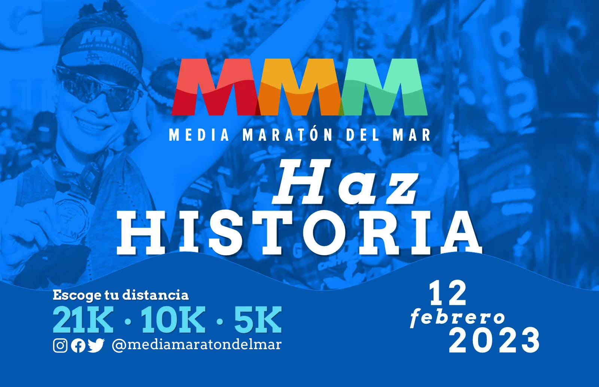
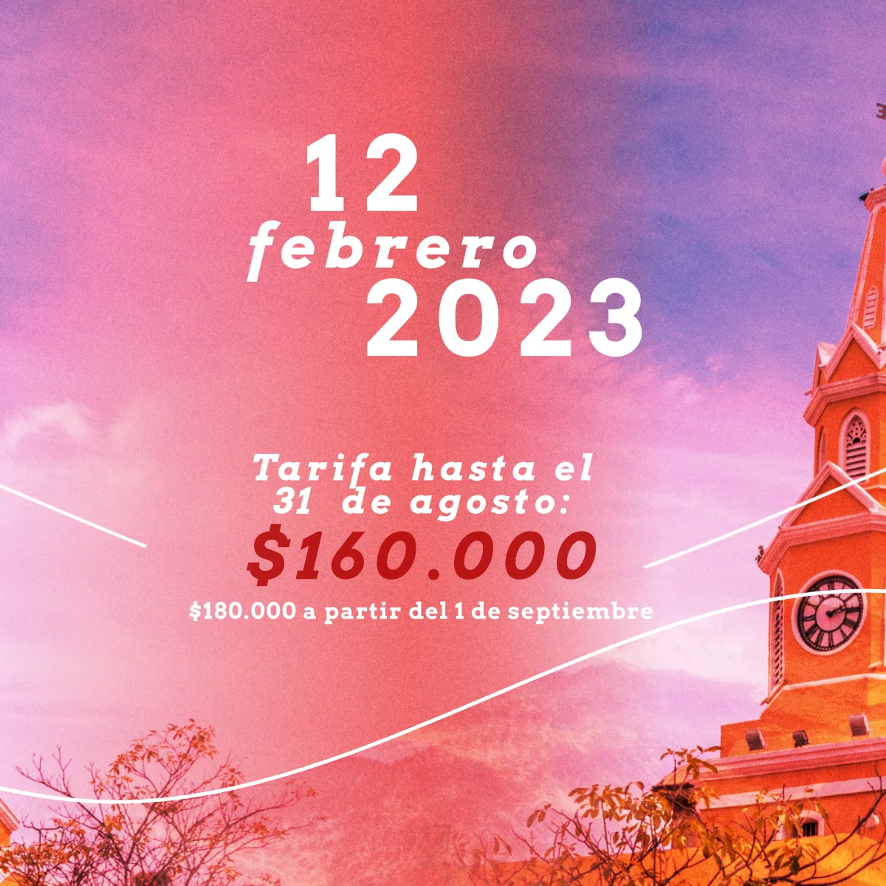
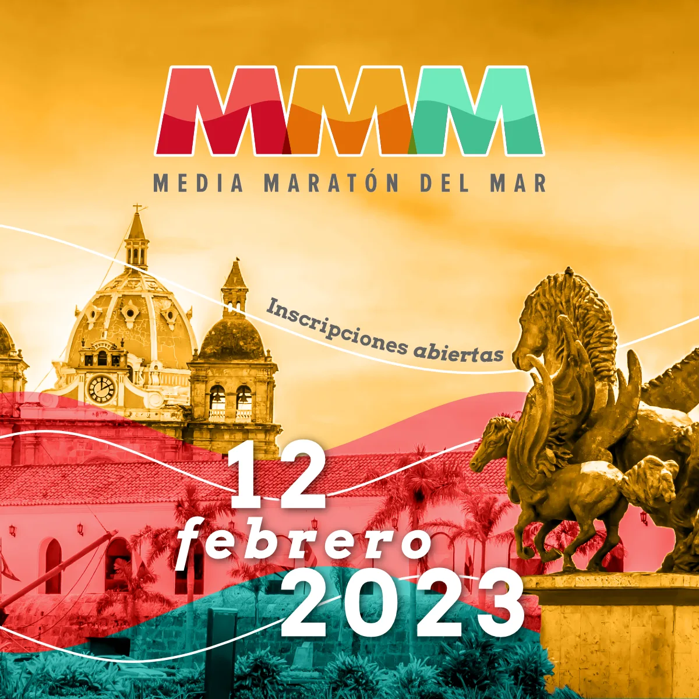
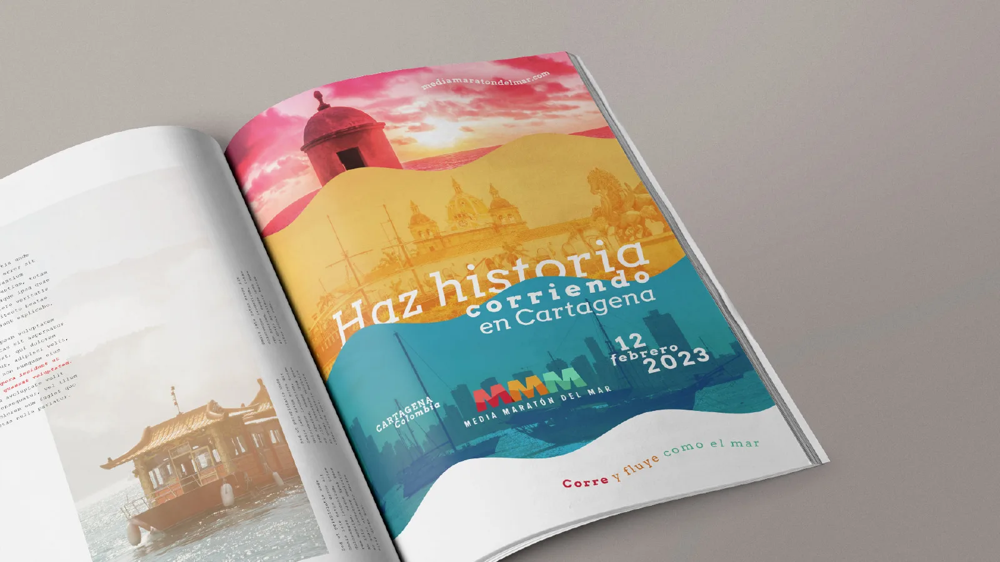
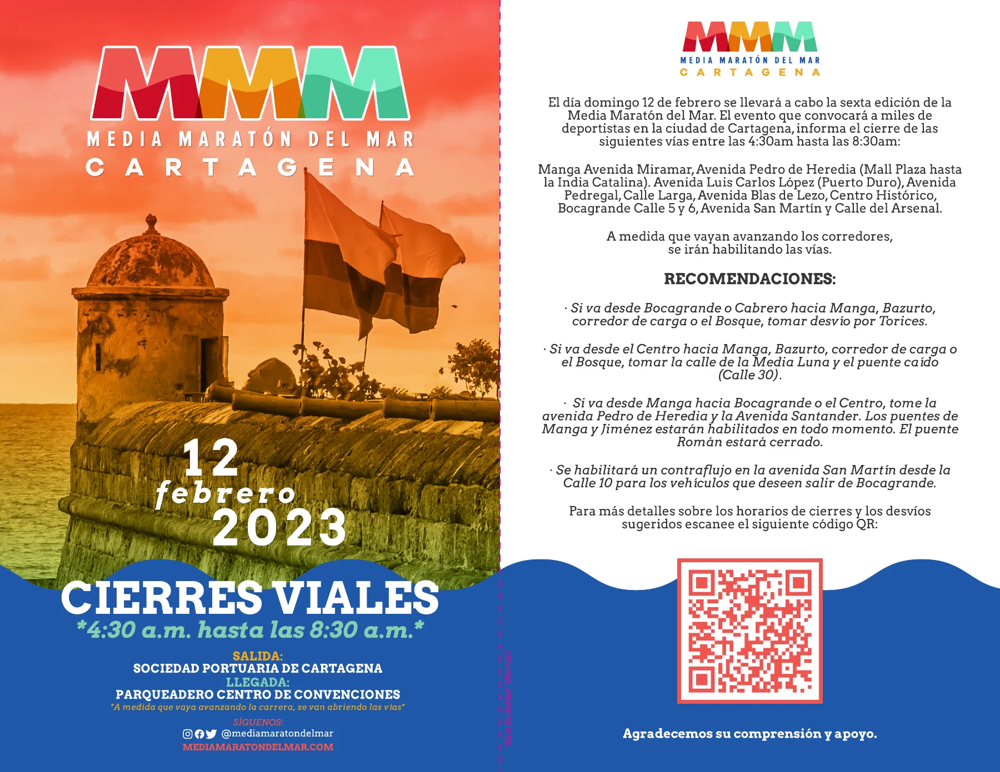

Bicentenario naval
Homenaje a la Batalla Naval del Lago de Maracaibo (1823) y al almirante José Prudencio Padilla.
Media Maratón del Mar 2023
La sexta edición rindió homenaje al bicentenario de la Batalla Naval del Lago de Maracaibo y a la victoria del almirante José Prudencio Padilla: ese domingo, los corredores se volvieron marinos.

Salida: Puerto de CartagenaLlegada: Centro de Convenciones21K 5:30 · 10K 5:45 · 5K 6:00 a. m.
01
La edición
Datos de carrera reunidos de la prensa y de los comunicados de la organización.
Homenaje a la Batalla Naval del Lago de Maracaibo (1823) y al almirante José Prudencio Padilla.
La carrera arrancó a las 5:30 a. m. desde las instalaciones portuarias.
La mayor parte de la ruta bordeó el mar hasta la calle del Arsenal.
Meta en la calle del Arsenal; todos los finalistas recibieron medalla.
OrganizaciónMCM Operador de Eventos y Motivva Sport Logistics.
02
Campaña
La revisión de la imagen para 2023 partió del ADN de la marca: el logotipo MMM, sus colores y la ola.




03
Producción de evento
44 artes de producción para la entrega de kits, la acreditación y el día de carrera.
Números por distancia, bolsa del kit y camisetas.
Pórtico, cenefa, counters de entrega, backings de distancia y de recorrido, punto de información y trimalla.
Escarapelas por tipo de acceso, con la ola como recurso.
Paneles de horarios, cinta de meta, faldón de tarima y trofeos.
Backing para la rueda de prensa.
04
Resultados
Tiempos oficiales publicados el día de la carrera.
Desde 2018 · Cartagena de Indias
Sexta ediciónLa sexta edición rindió homenaje al bicentenario de la Batalla Naval del Lago de Maracaibo y a la victoria del almirante José Prudencio Padilla.
Media Maratón del Mar 2023
6.ª edición · domingo 12 de febrero de 2023.
Fuentes: artes de producción y campaña 2023 de MIRAPALTECHO; El Universal (crónica y resultados, 12 de febrero de 2023) y El Espectador (“La Maratón del Mar, la carrera en la que todos se volvieron marinos”).
05
Créditos
Campaña y producción desarrolladas en MIRAPALTECHO para la sexta edición.
Dirección, acompañamiento, procesos y contribuciones creativas.
Ejecución y apoyo creativo en partes iguales.
Proyecto desarrollado en contexto colaborativo.